Vector Calculus
The objective of this chapter is to study vector fields and how to perform differential and integral calculus on them. Essentially, a vector field is a function of several variables whose output is a vector, instead of a number. Vector fields may be integrated along curves and surfaces, so we will develop the necessary tools to do so. Finally, we will cover some multidimensional versions of the Fundamental Theorem of Calculus, known as Green's Theorem, Stokes' Theorem and the Divergence Theorem.
Vector Fields
The main objects that we will be working with throughout this chapter are vector fields:
Here, we will only be considering vector fields on $\RR^2$ and $\RR^3$, but one can work with vector fields in any dimension. Moreover, although we have already been working with functions of several variables during this course, they also go by a different name in the context of vector calculus.
function $f\colon E\to\RR$.
In practice, working with a vector $\bf{v}=\langle v_1,\dots,v_n\rangle$ in $\RR^n$ is the same as working with the $n$ numbers $v_1,\,\dots,\,v_n$. This also happens with vector fields: Consider a vector field $\bf{F}$ on a subset $E$ of $\RR^2$. Then, for each $(x,y)$ in the domain of $\bf{F}$, the vector $\bf{F}(x,y)$ has two components, which we may call $P(x,y)$ and $Q(x,y)$. In other words, we have \[ \bf{F}(x,y)=\langle P(x,y),Q(x,y)\rangle = P(x,y)\bf{i}+Q(x,y)\bf{j}. \] Recall that, here, $\bf{i}=\langle 1,0\rangle$ and $\bf{j}=\langle 0,1\rangle$. Sometimes we shorten the above equation by just writing $\bf{F}=P\,\bf{i}+Q\,\bf{j}$. The scalar fields $P$ and $Q$ are called the component fields of $\bf{F}$.
Similar considerations can be made with vector fields on $\RR^3$. Suppose $\bf{F}$ is a vector field on $E$, where $E$ is a subset of $\RR^3$. Then, for each $(x,y,z)$ in $E$, we can write \[ \bf{F}(x,y,z) = \langle P(x,y,z),Q(x,y,z),R(x,y,z)\rangle = P(x,y,z)\bf{i}+Q(x,y,z)\bf{j}+R(x,y,z)\bf{k}, \] where $\bf{i}=\langle 1,0,0\rangle$, $\bf{j}=\langle 0,1,0\rangle$ and $\bf{k}=\langle 0,0,1\rangle$. The scalar fields $P$, $Q$ and $R$ are known as the component fields of $\bf{F}$.
Vector fields can be plotted as follows: if $\bf{F}$ is a vector field on $E$, then for every $p\in E$ we draw an arrow representing the vector $\bf{F}(p)$ starting at $p$. While these pictures can be useful, if the length of the vectors $\bf{F}(p)$ changes drastically as we change $p$, this representation can become cluttered with vectors of different lengths. Thus, a common practice is to draw all of these vectors with the same length (only paying attention to their direction) and use colors to represent the actual length of these vectors. For example, the picture on the right is a representation of the vector field $\bf{F}(x,y)=\langle x,y\rangle$.
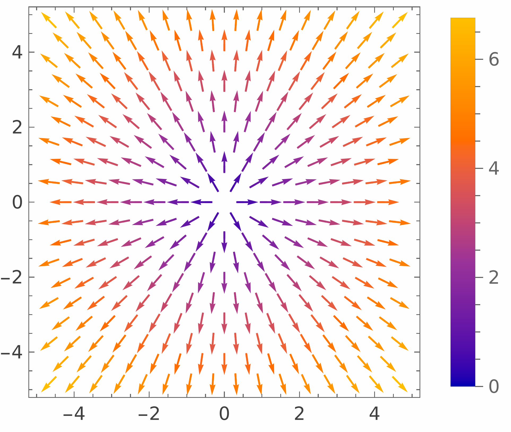
Below are some more examples of vector fields on $\RR^2$:
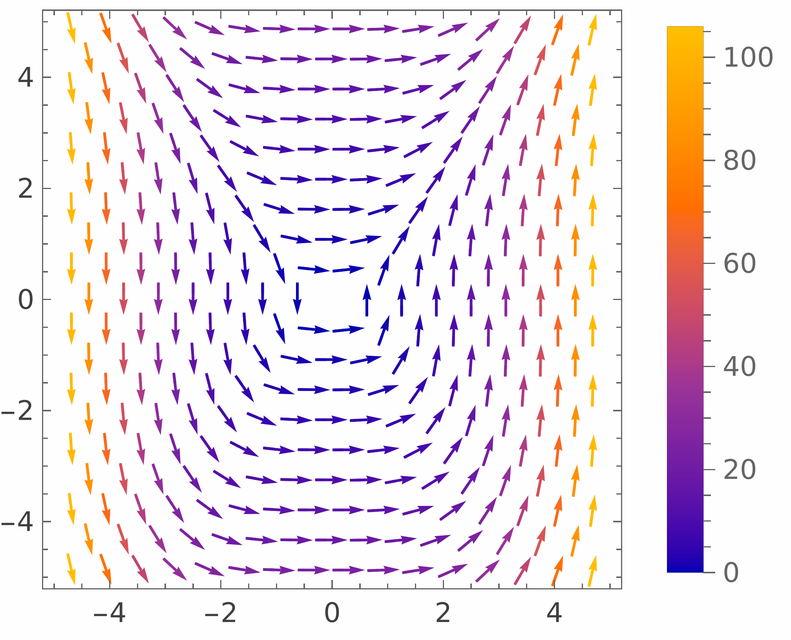
$\bf{F}(x,y)=\langle y^2,x^3\rangle$
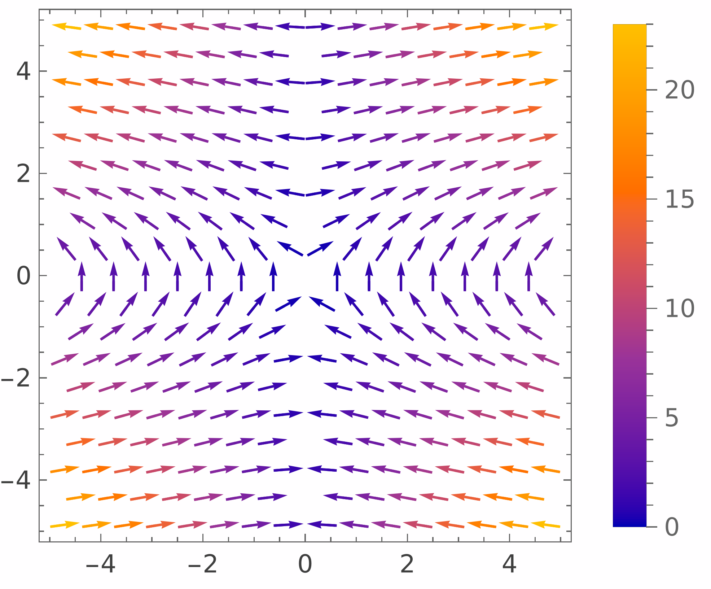
$\bf{F}(x,y)=\langle xy,\ln(x^2+1)\rangle$
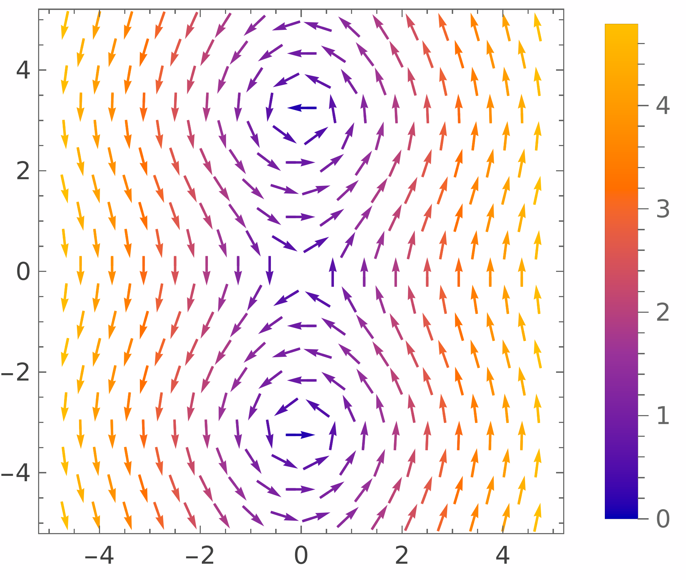
$\bf{F}(x,y)=\langle \sin y, x\rangle$
Using the exact same procedure, we can represent vector fields in three dimensions. Here are some examples of vector fields in $\RR^3$ with their corresponding graphical representations.
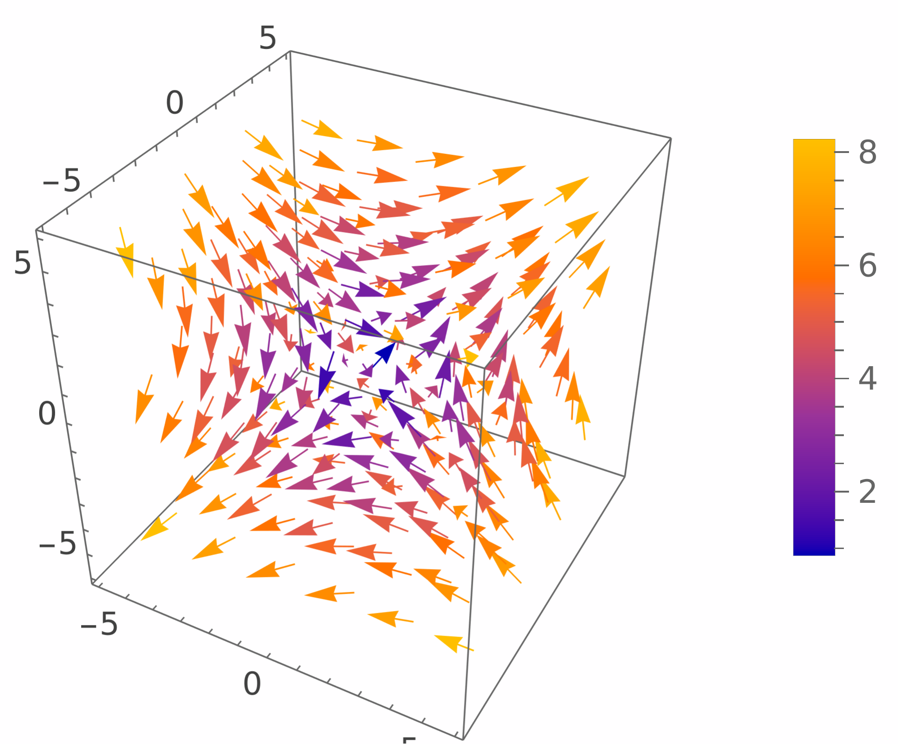
$\bf{F}(x,y,z)=\langle z,y,x\rangle$
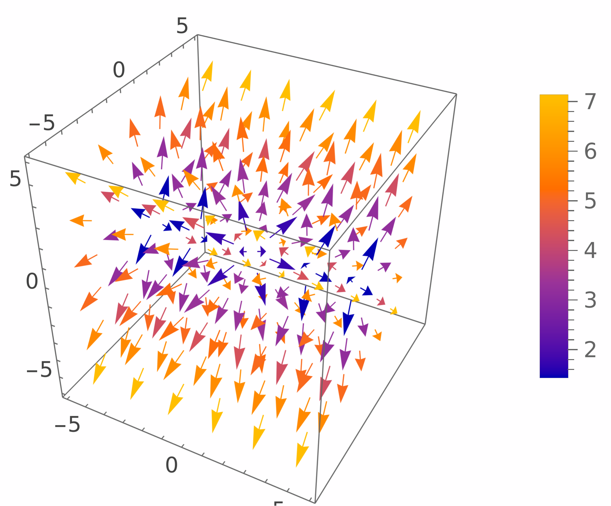
$\bf{F}(x,y,z)=\langle 1/x,y,z\rangle$
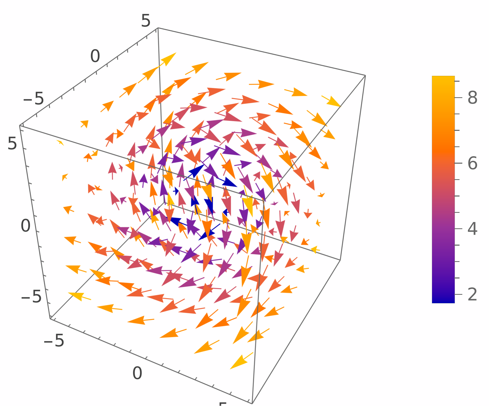
$\bf{F}(x,y,z)=\langle z, y, -x \rangle$
In practice, these representations are almost always made with a computer, as drawing vector fields by hand can be extremely hard. However, for simple vector fields it is possible to give a rough sketch of their representations.
Solution.
Solution.
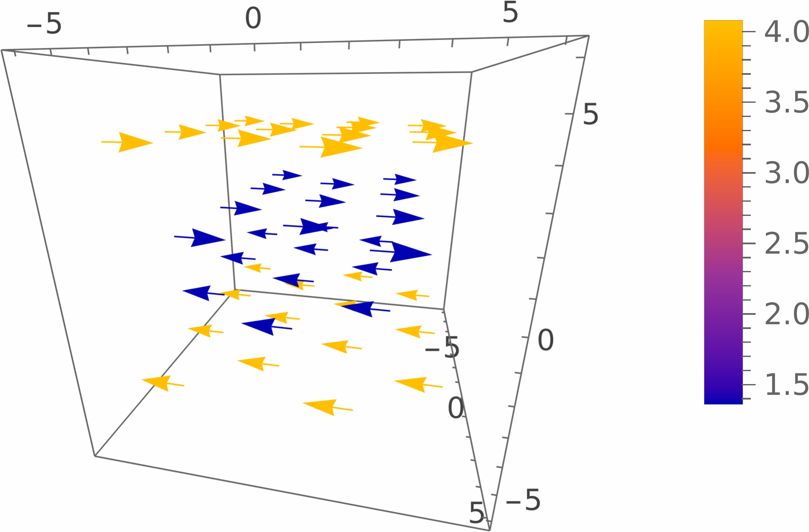
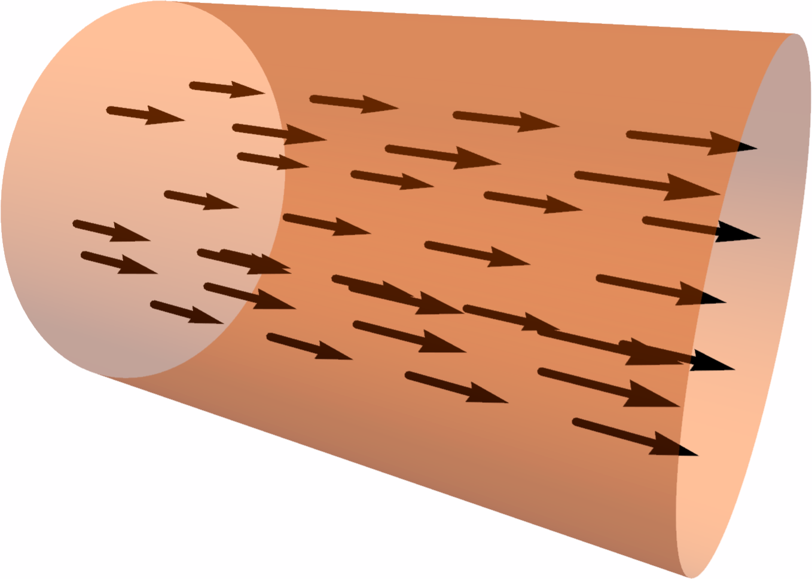
The picture below gives a representation of the vector field \[ \bf{F}(\bf{x})=-\frac{\bf{x}}{\lvert\bf{x}\rvert^3}. \]
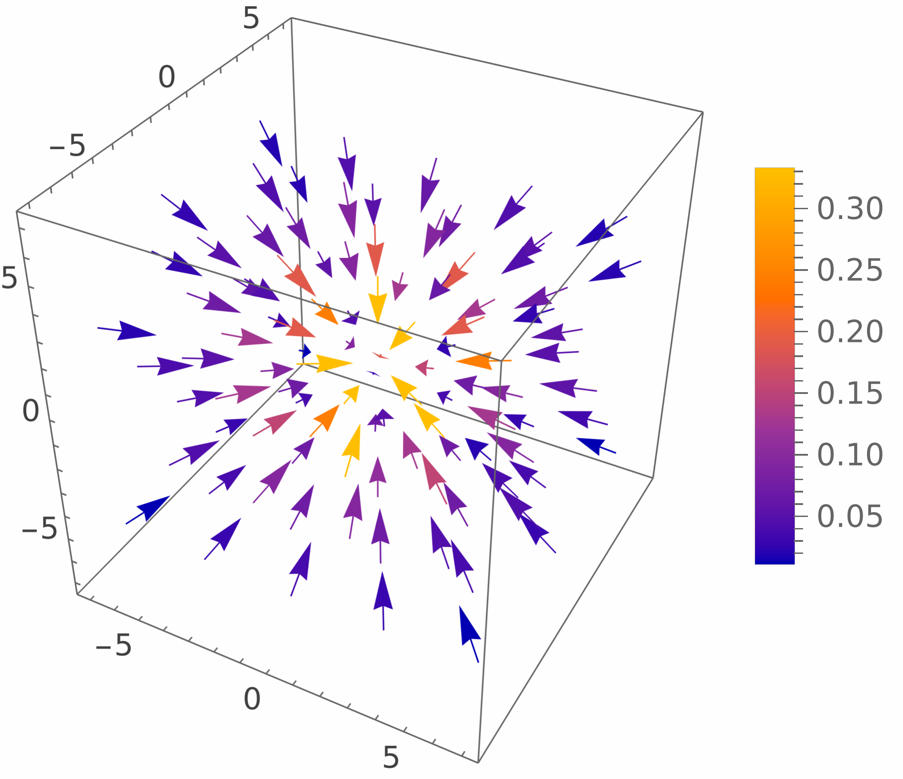
Gradient Fields and Potential Functions
Given a differentiable function $f(x_1,\dots,x_n)$ of $n$ variables, recall that the gradient of $f$ at a point $p$ is the vector $\nabla f(p)$ whose components are the partial derivatives of $f$ at $p$. In particular, the function $\nabla f$ that takes each $p$ to $\nabla f(p)$ is a vector field.
Solution.
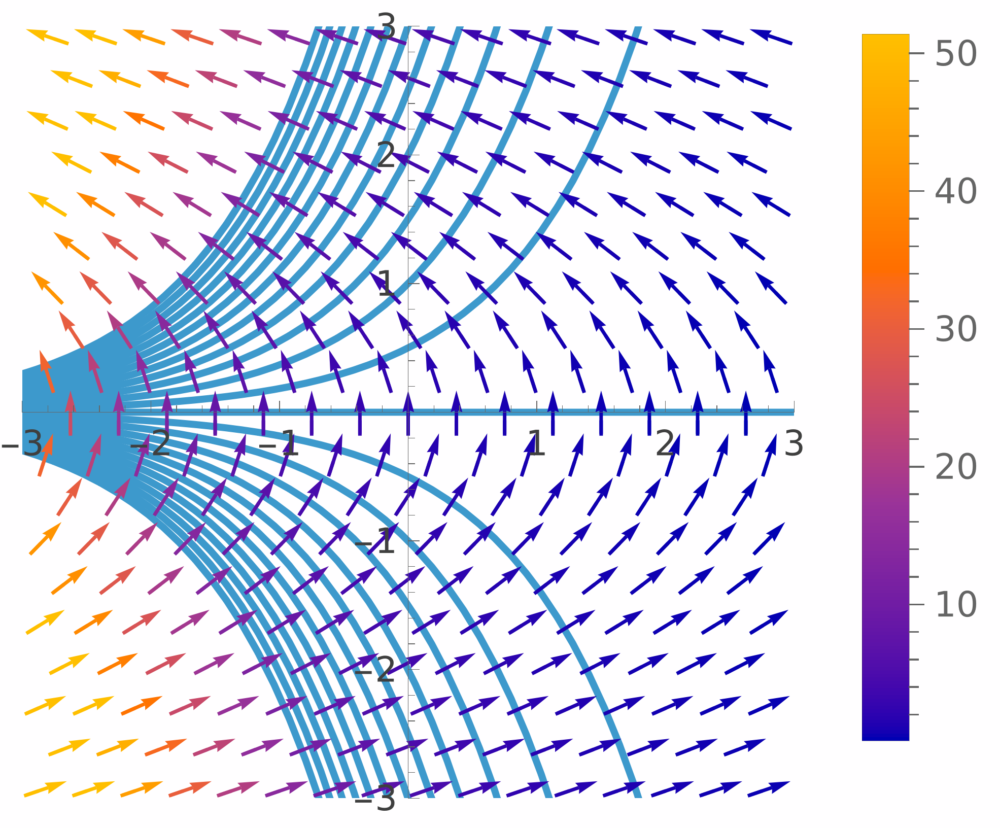
In addition, we note that the length of $\nabla f$ is larger at the regions where the level curves are closer to each other. This is because for every $p\in\RR^2$ the length $\lvert \nabla f(p)\rvert$ coincides with the directional derivative of $f$ at $p$ in the direction of $\nabla f(p)$. Therefore, at regions where the level curves are closer, this directional derivative has to be higher, and hence the length of $\nabla f$ is greater.
In general, not every vector field on $\RR^n$ will be the gradient of a function of $n$ variables. This motivates the following definition.
Solution.
Note that, as a function of three variables, we have \[ f(x,y,z)=\frac{k}{\sqrt{x^2+y^2+z^2}}=k\big(x^2+y^2+z^2\big)^{-\frac12}. \] Let us compute $\nabla f$. For instance, we have \[ \frac{\partial f}{\partial x} = -\frac12 k\cdot 2x\big(x^2+y^2+z^2\big)^{-\frac32} = \frac{-k\, x}{\left(\sqrt{x^2+y^2+z^2}\right)^3} = \frac{-k\, x}{\lvert \bf{x}\rvert^3}. \] Similarly, \[ \frac{\partial f}{\partial y} = \frac{-k\, y}{\lvert \bf{x}\rvert^3}, \qquad \frac{\partial f}{\partial z} = \frac{-k\, z}{\lvert \bf{x}\rvert^3}, \] hence the gradient of $f$ is \[ \nabla f(\bf{x}) = -\frac{k\,x}{\lvert \bf{x}\rvert^3}\,\bf{i} -\frac{k\,y}{\lvert \bf{x}\rvert^3}\,\bf{j} -\frac{k\,z}{\lvert \bf{x}\rvert^3}\,\bf{k} = -\frac{k}{\lvert\bf{x}\rvert^3}(x\,\bf{i}+y\,\bf{j}+z\,\bf{k}) = -\frac{k\,\bf{x}}{\lvert \bf{x}\rvert^3} = \bf{F}(\bf{x}), \] so $\bf{F}=\nabla f$. This shows that $\bf{F}$ is conservative and $f$ is a potential function for $\bf{F}$.